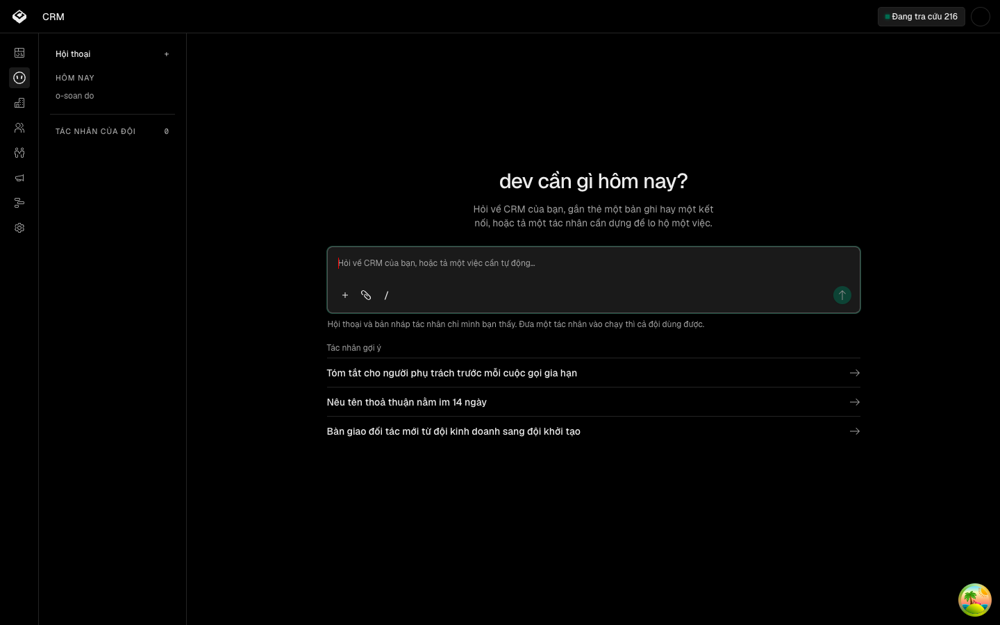

| Eval | Tiêu chí | Loại | Verdict | run_id | verified_at |
|---|---|---|---|---|---|
| E1 | AC-1 | script | PASS | minted-thuoc-o-soan-don-dep-E1-r3 | 2026-09-23T12:05:00Z |
| E2 | AC-2 | script | PASS | minted-thuoc-o-soan-don-dep-E2-r3 | 2026-09-23T12:05:00Z |
| E3 | AC-3 | script | PASS | minted-thuoc-o-soan-don-dep-E3-r3 | 2026-09-23T12:05:00Z |
| E4 | AC-4 | script | PASS | minted-thuoc-o-soan-don-dep-E4-r3 | 2026-09-23T12:05:00Z |
| E5 | AC-5 | script | PASS | minted-thuoc-o-soan-don-dep-E5-r3 | 2026-09-23T12:05:00Z |
| E6 | AC-6 | script | PASS | minted-thuoc-o-soan-don-dep-E6-r3 | 2026-09-23T12:05:00Z |
| E7 | AC-7 | ui-check | PASS | minted-thuoc-o-soan-don-dep-E7-r3 | 2026-09-23T12:05:00Z |
| E8 | AC-8 | script | PASS | minted-thuoc-o-soan-don-dep-E8-r3 | 2026-09-23T12:05:00Z |
| E9 | AC-9 | script | PASS | minted-thuoc-o-soan-don-dep-E9-r3 | 2026-09-23T12:05:00Z |
AC-1: Given máy chủ giả phục vụ một thư mục KHÁC `apps/app/public` của cây (có một tệp `.svg` làm đối chứng) và `NGUOI=dev@localhost`, When chạy bản sửa, Then thoát 2, in dòng `KHONG DO DUOC: may chu o <APP_URL> khong phuc vu cay dang xet.` của `canh-cay.mjs`, và lượt có 0 vật sót; cùng ca đó bản gốc để lại tệp `o-soan-canh-*.svg` và bộ đo in `khac-cay: sot dau moc`.
-- tiền đề làn đo: đã dọn contextDevApiKey -- tiền đề làn đo: đã dọn ảnh đại diện -- tiền đề làn đo: đã dọn tên miền được phép
AC-2: Given máy chủ giả phục vụ đúng `apps/app/public` của cây (canh-cay ra `dung-cay`) và `NGUOI=dev@localhost`, When bản sao của rang bị chèn `khongDo("pha-thu <moc>")` tại từng mốc — `giua-gieo` (sau khi hội thoại đã tạo, trước khi ghi sự kiện), `sau-gieo`, `sau-chrome` (Chrome đã mở, trước trang đầu) — và ở ca thứ tư `loi-la` bị chèn `throw new Error("pha-thu loi la")` tại mốc `sau-chrome`, Then mỗi lượt thoát 2, in `KHONG DO DUOC: pha-thu <moc>` (ca `loi-la`: dòng `KHONG DO DUOC:` có `pha-thu loi la`), và 0 vật sót; cùng bốn ca bản gốc để lại hội thoại, bộ đo in `<ca>: sot hoi thoai`.
-- tiền đề làn đo: đã dọn contextDevApiKey -- tiền đề làn đo: đã dọn ảnh đại diện -- tiền đề làn đo: đã dọn tên miền được phép
AC-3: Given như AC-2, bản sao bị chèn ở mốc `sau-chrome` một dòng in `PHA-THU SAN SANG` rồi treo, When bộ đo gửi SIGTERM (ca `sigterm`) hoặc SIGINT (ca `sigint`) sau khi thấy dòng đó, Then lượt thoát 143 hoặc 130 tương ứng và 0 vật sót; cùng hai ca bản gốc để lại hội thoại, bộ đo in `<ca>: sot hoi thoai`. Đối chứng dương của thước vật sót (ca `sigkill`): bộ đo gửi SIGKILL cho bản sửa ở cùng mốc — bộ đo PHẢI in `sigkill: sot chrome` và `sigkill: sot hoi thoai` (rồi tự dọn), nếu không thì chính thước (b)/(c) mù.
-- tiền đề làn đo: đã dọn contextDevApiKey -- tiền đề làn đo: đã dọn ảnh đại diện -- tiền đề làn đo: đã dọn tên miền được phép
AC-4: Given `NGUOI` vắng khỏi môi trường, When chạy bản sửa (máy chủ giả như AC-2), Then thoát 2 với dòng `KHONG DO DUOC:` có chữ `NGUOI`, và 0 vật sót; và tệp bản sửa không chứa chuỗi `@onemount.com`; cùng ca bản gốc thì có hội thoại mới (đã đi qua bước gieo) và không dòng `KHONG DO DUOC:` nào có chữ `NGUOI`, bộ đo in `thieu-nguoi: khong chan` — phân biệt bằng quan hệ, không bằng thời gian; hạn của lượt là hằng trong tệp cấu hình của bộ đo.
-- tiền đề làn đo: đã đặt ảnh đại diện (sẽ dọn) -- tiền đề làn đo: đã đặt contextDevApiKey (khoá giả, sẽ dọn) mot-luot: da cho 60s de toi luot
AC-5: Given bản sửa, When đọc tệp, Then nó import `builderToken` từ `apps/agent/agent/lib/custom-agent-dispatch.ts` và không còn chuỗi `builder:` nào viết tay; bản gốc bị bộ đo gọi tên `token: builder viet tay`.
DUNG sua — token: dat DUNG goc — token: builder viet tay PHA-THU KET LUAN: 2 DUNG, 0 SAI — ma thoat 0
AC-6: Given bản sửa, When lấy hai khai báo `MAU_CON_TRO` và `MAU_CON_TRO_RGB` ra và tính giá trị, Then chuỗi bằng đúng `rgb(<r>, <g>, <b>)` dựng từ mảng, và khai báo chuỗi tham chiếu `MAU_CON_TRO_RGB` (không có literal màu thứ hai); bản gốc bị gọi tên `mau: khai hai lan`.
DUNG sua — mau: dat DUNG goc — mau: khai hai lan PHA-THU KET LUAN: 2 DUNG, 0 SAI — ma thoat 0
AC-7: Given máy chủ dev của cây đang xét ở 3600/3601 (app/api), When chạy lần lượt đúng dòng lệnh `Chay:` trong `steps` của E1, E2, E8 thuộc `_acceptance/o-soan-va-ly-do-loi/evals.yaml` với `BANG_CHUNG` trỏ thư mục bằng chứng của hồ sơ này, Then mỗi lượt thoát 0 và in `DAT: <che do>`, mỗi lượt 0 vật sót, và thư mục `_acceptance/o-soan-va-ly-do-loi/evidence/` không đổi byte nào.

NETWORK TRUTH: driver của bước 3 là Bash chạy script pha-thu.mjs/o-soan.mjs (Playwright nội bộ của rang, không phải browser tool của phiên này có read_network_requests/read_console_messages) → không có kênh đọc network cho phiên verify → networkObserved = "n-a (driver)". Không dump evidence/E7-network.txt vì không có driver phù hợp trong luật scoping. Kết luận: MỌI assertion PASS → exitCode=0. Máy chủ 3600/3601 là tài nguyên dùng chung của đúng cây đang xét, đã dùng lại theo đúng luật, không khởi động và không tắt gì thêm.
AC-8: Given diff từ `git merge-base origin/onehub HEAD` tới HEAD, When liệt kê tệp đổi ngoài `_acceptance/**` và ngoài `risk_tiers.t1_skip_globs`, Then danh sách rỗng; và một danh sách mẫu có `apps/agent/agent/lib/custom-agent-dispatch.ts` bị phép đo gọi tên.
DUNG doi-chung — pham-vi: goi ten apps/agent/agent/lib/custom-agent-dispatch.ts DUNG sua — pham-vi: 17 tep doi tu 7cf69d6a, 0 ngoai _acceptance va T1 PHA-THU KET LUAN: 2 DUNG, 0 SAI — ma thoat 0
AC-9: Given diff của `_acceptance/o-soan-va-ly-do-loi/evals.yaml` từ `git merge-base origin/onehub HEAD` tới HEAD, When so từng dòng đổi, Then chỉ có đúng ba dòng `Chay:` của E1, E2, E8 đổi, và mỗi dòng mới bằng đúng dòng cũ với tiền tố `NGUOI=${NGUOI:-dev@localhost} ` chèn ngay trước `bun scripts/lan-do/tien-de.mjs`; một diff mẫu bớt một chế độ (hoặc thêm một cờ) bị phép đo gọi tên.
DUNG doi-chung — steps-cu: mau them --bo-qua bi goi ten DUNG sua — steps-cu: chi ba dong Chay doi, dung tien to NGUOI PHA-THU KET LUAN: 4 DUNG, 0 SAI — ma thoat 0